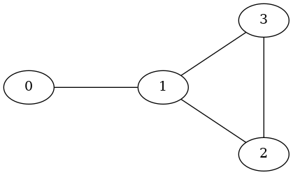

hiperwalk.Coined#
- class hiperwalk.Coined(graph=None, **kwargs)[source]#
Manage instances of coined quantum walks on arbitrary graphs.
The class provides methods to handle and generate operators in the coined quantum walk model. It also facilitates the simulation of coined quantum walks on graphs.
For additional details about coined quantum walks, refer to the Notes Section.
- Parameters:
- graph
Graph on which the quantum walk takes place. Two types of entries are accepted:
Simple graph (
hiperwalk.Graph);Multigraph (
hiperwalk.Multigraph);
A symmetric directed multigraph is created based on the input.
- **kwargsoptional
Optional arguments for setting the non-default evolution operator. See
set_evolution().
- Raises:
- TypeError
if
adj_matrixis not an instance ofscipy.sparse.csr_array.
See also
Notes
The coined quantum walk model is a quantum analog of classical random walks, incorporating an additional quantum coin-toss mechanism. It uses an extra quantum internal degree of freedom, represented by the coin state, to determine the direction of the walker’s movement on a graph.
In the coined model, the graph is interpreted as a directed graph as follows: Each edge in \(G(V, E)\) connecting two distinct vertices translates into a pair of arcs in the directed graph \(\vec{G}(V, \mathcal{A})\), where
\[\begin{align*} \mathcal{A} = \bigcup_{v_k v_\ell\, \in E} \{(v_k, v_\ell), (v_\ell, v_k)\}. \end{align*}\]Note
The order of arcs depends on the order of neighbors.
Arcs are represented using either the (tail,head) notation or numerical labels. In the
Graphclass, the arc labels are ordered such that for two arcs, \((v_i, v_j)\) and \((v_k, v_\ell)\), with labels \(a_1\) and \(a_2\) respectively, \(a_1 < a_2\) if and only if \(i < k\) or (\(i = k\) and \(j < \ell\)). Loops are depicted as single arcs, affecting the dimension of the associated Hilbert space. In coined quantum walks, the weights of arcs do not influence the dynamics.The computational basis is composed of the graph’s arc set. For simple graphs, the cardinality of the computational basis is \(2|E|\), where \(E\) represents the graph’s edge set. When a loop is added to the graph, the cardinality of the computational basis increases by one for each loop.
The arcs are arranged within the computational basis to ensure that the coin operator adopts a block-diagonal matrix form. For additional information on the arc ordering, please consult the respective graph descriptions.
For a more detailed understanding of coined quantum walks, refer to Section 7.2: Coined Walks on Arbitrary Graphs, found in the book ‘Quantum Walks and Search Algorithms’ [1].
For example, the graph \(G(V, E)\) shown in Figure 1 has an adjacency matrix
adj_matrix.>>> adj_matrix = np.array([ ... [0, 1, 0, 0], ... [1, 0, 1, 1], ... [0, 1, 0, 1], ... [0, 1, 1, 0]]) >>> adj_matrix array([[0, 1, 0, 0], [1, 0, 1, 1], [0, 1, 0, 1], [0, 1, 1, 0]])
Figure 1#
Suppose that, for this graph, the neighbors are given in ascending order. Then, the arcs of the associated digraph in the arc notation are
>>> arcs = [(i, j) for i in range(4) ... for j in range(4) if adj_matrix[i,j] == 1] >>> arcs [(0, 1), (1, 0), (1, 2), (1, 3), (2, 1), (2, 3), (3, 1), (3, 2)]
Note that
arcsis already sorted, hence the associated numeric labels are>>> arcs_labels = {arcs[i]: i for i in range(len(arcs))} >>> arcs_labels {(0, 1): 0, (1, 0): 1, (1, 2): 2, (1, 3): 3, (2, 1): 4, (2, 3): 5, (3, 1): 6, (3, 2): 7}
The numeric labels are depicted in Figure 2.
![digraph {
0 [pos="0,0!"];
1 [pos="2,0!"];
2 [pos="3.5,-1!"];
3 [pos="3.5,1!"];
0 -> 1 [headlabel=0 labeldistance=4.75 labelangle=-10];
1 -> 0 [headlabel=1 labeldistance=4.75 labelangle=-10];
1 -> 2 [headlabel=2 labeldistance=4.75 labelangle=-10];
1 -> 3 [headlabel=3 labeldistance=4.75 labelangle=-10];
2 -> 1 [headlabel=4 labeldistance=4.75 labelangle=-10];
2 -> 3 [headlabel=5 labeldistance=5.5 labelangle=-7];
3 -> 1 [headlabel=6 labeldistance=4.25 labelangle=-10];
3 -> 2 [headlabel=7 labeldistance=5.5 labelangle=-7];
}](../../_images/graphviz-3816b8fa2986dca2ac5d62be1eeb20a6ffd43b97.png)
Figure 2#
If we insert the labels of the arcs into the adjacency matrix, we obtain matrix
adj_labelsas follows:>>> adj_labels = [[arcs_labels[(i,j)] if (i,j) in arcs_labels ... else '' for j in range(4)] ... for i in range(4)] >>> adj_labels = np.matrix(adj_labels) >>> adj_labels matrix([['', '0', '', ''], ['1', '', '2', '3'], ['', '4', '', '5'], ['', '6', '7', '']], dtype='<U21')
Note that, intuitively, the arcs are labeled in left-to-right and top-to-bottom fashion.
References
[1]R. Portugal. “Quantum walks and search algorithms”, 2nd edition, Springer, 2018.
Methods
Returns the default coin name.
fit_sin_squared(x, y)Fit data to the squared sine function.
get_coin()Retrieve the coin used in the creation of the evolution operator.
Retrieve the evolution operator.
Retrieve the marked vertices.
Retrieve the shift operator.
Check whether the persistent shift operator is defined for the current graph.
Returns dimension of the Hilbert space.
ket(arc)Create a computational basis state.
max_success_probability([state, delta_time])Find the maximum success probability.
optimal_runtime([state, delta_time])Find the optimal running time of a quantum-walk-based search.
probability(states, vertices)Computes the sum of probabilities for the specified vertices.
probability_distribution(states)Compute the probability distribution of given state(s).
set_coin([coin])Set the coin operator based on the graph's structure.
set_evolution(**kwargs)Set the evolution operator.
set_marked([marked])Set the marked vertices.
set_shift([shift])Set the shift operator.
simulate([time, state, initial_state])Simulates the quantum walk.
state(entries)Generates a valid state.
success_probability(states)Computes the success probability for the given state(s).
Create a uniform state.